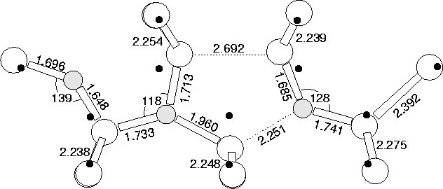

An alternative 3O model is the structure of the di-y-lid, with one of the outer Oi atoms removed. According to our calculations this is 1.789 eV less stable than the Snyder-Stavola model. The structure is shown in Figure 9.14, with eigenvalues in Figure 9.10b.
As can be seen, one of the core y-lid atoms drops back into its bond centre, leading to a separated defect core. However, the reconstructed Si-Si bond remains. Symmetry excludes this structure from being any of the higher order TDs. The local vibrational modes are given in Table 9.6. At first site these do not appear to bear any relation to the experimentally observed modes, and hence this would exclude it as a model for any TD. However the top 1123.2 cm-1 mode is largely Oi stretch of the isolated atom. 1058.8 cm-1 is primarily bond stretch of the trivalent O, while the 912.4 cm-1 is bond stretch of its neighbouring Oi. 790.4 cm-1 is the out-of-plane wag of the trivalent oxygen.
Thus the top mode should lie roughly over the Oi absorption, which leaves stronger modes at 1058.8 cm-1 and 790.4 cm-1. There are various reasons for considering this as a model for TD1. Apart from the isolated Oi mode, the nature of these modes are very similar to those of the di-y-lid, except that the out-of-plane wag only occurs with a single Oi instead of a pair; the low frequency absorption for TD1 is exceptionally weak and took a long time to find[239], and this would explain the lower signal strength. These calculated modes are too high for TD1 (they should be lower than those of TD2 or TD3). The calculated donor state lies deeper in the gap than any of the other TD models such as the di-y-lid, and the donor level for TD1 is known to lie deeper than the others[203].
TD1 forms quickly, and then gradually transforms to TD2; this would be consistent with a scheme where, for example, this defect trapped Oi. Alternatively, if it is not very stable (the dimer is quite separated from the isolated Oi) it could be a transient species, and eventually instead of dimers meeting Oi to form this structure they pair up to form a di-y-lid TD2. Such binding could be a Fermi level effect. As a dimer migrates towards the Oi, one of its oxygen atoms passes through a y-lid as a saddle point. If at this point it loses its two electrons it becomes stable in this structure, forming this partially dissociated TD1 structure. At a later point when the higher order TDs are forming (TD2 onwards), these have shallower defect levels than TD1, and so could depopulate into the TD1 level. This would instantly destabilise the defect and allow it to break up into a neutral separated dimer and Oi. Hence it would be a rapidly forming defect that would quickly be lost as soon as defect complexes were formed which possessed a shallower level.
| 3cLocal Vibrational Modes (cm-1) | Dipole moment squared | ||
| 16O | 17O | 18O | for 16 O |
| 1123.2 | 25.5 | 48.6 | 0.178 |
| 1058.8 | 25.4 | 48.4 | 0.185 |
| 912.4 | 20.9 | 39.7 | 0.163 |
| 790.4 | 15.6 | 29.6 | 0.366 |
| 722.3 | 10.9 | 20.5 | 0.145 |
| 698.4 | 11.6 | 21.8 | 0.198 |
| 680.4 | 9.9 | 18.6 | 0.129 |
| 617.4 | 2.4 | 4.6 | 0.004 |
|  |